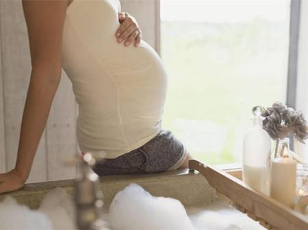

狐臭是一种体臭，味道较重容易令旁人感到不舒服。那么，如果孕妈妈有狐臭怎么办呢?手术?药物?该怎么选择呢?如何解决狐臭烦恼，下面介绍几个方法供孕妈妈们参考!
1、香皂洗澡减低细菌滋生
经过腋窝，乳晕、肛门、外阴和外耳道的汗液与细菌分解才会发出气味，所以要调理狐臭，保持身体清洁便能减低细菌滋生，使狐臭不会发作。每天用香皂清洗腋窝，若要上班而无法经常洗澡，也应定时清洗腋窝。

2、保持愉悦、乐观的心情
有狐臭的女性在怀孕期间易怒、敏感、情绪起伏大，情绪过程中的许多生理变化都同内分泌腺的活动有关，会使狐臭明显加重。一定要保持愉悦、乐观的心情，这样不仅可以减少怀孕期间的生理反应，对治疗狐臭也是相当有助益的。
3、避免吃口味重、刺激性食物
怀孕期间很多女性口味会变得很重，像一些刺激性的食物，例如大葱大蒜，辣椒等，有狐臭的孕妇，还是要尽量避免吃这些食物! 再者在饮食习惯上，每天按时进食，除了维持自身机体代谢和消耗所需的营养外，还要保证胎儿的生长发育。
随着妊娠的进展，孕妇食欲会逐渐增加，但应该注意营养均衡，可以让摄入的食物结构在24~48 小时内保持平衡。食品要多样化，食物要晕素、粗细搭配。必须注意补充的食物是蛋白质、醅类、矿物质和维生素。
总之，孕妇有腋臭不要过份在意，平时要注意情绪稳定，要长期有规律生活，养成有一个良好的作息、饮食、起居、活动的好习惯，使神经系统建立良好的条件反射，避免内分泌神经失调，减少汗腺分泌紊乱现象，等到生完孩子后再用科学的方法治疗。